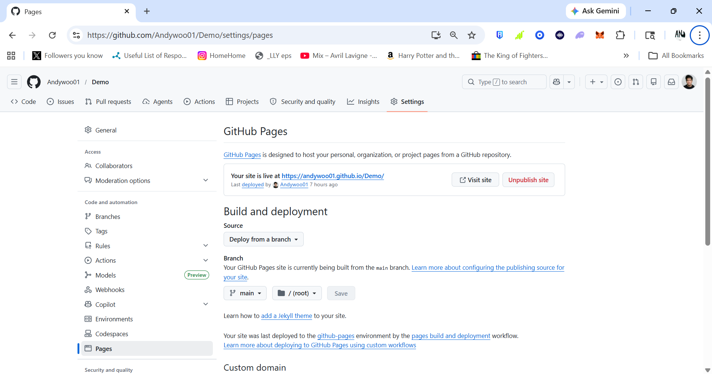

01
Start by choosing a code editor. Visual Studio Code is a common option for PC and Mac users. Mac users can also explore Nova, BBEdit, or Xcode. Download Visual Studio Code.

GitHub Pages
Start by choosing a code editor. Visual Studio Code is a common option for PC and Mac users. Mac users can also explore Nova, BBEdit, or Xcode. Download Visual Studio Code.
Create a GitHub account, then download GitHub Desktop so you can publish your website files. Download GitHub Desktop.

Open GitHub Desktop after it is installed. This is where you will create the repository that holds your website files and connects them to GitHub.

Click File, then choose New repository. Before you continue, make a folder where you want to store your website code.

Choose the local path for your website folder, create the repository, then publish it. In your GitHub settings, change the repository visibility to public.

Go to the repository Settings page and select Pages from the left side menu. Under Build and deployment, choose to deploy from a branch.

Wait a few minutes, then return to the top of the Pages screen. GitHub will show the live website link when the page is ready.

Watch the walkthrough video to see the full GitHub hosting process from start to finish.